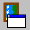
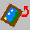
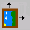

The toolbar at the top of the GOAT window consists of seventeen buttons representing the most commonly used functions. This includes graphics, text and OCR functions.
Open Image
Displays a standard file open dialog through which files of various
graphic formats can be selected.
The image will be displayed in the Image Editor window.

Save Image
Saves the current image. Confirmation will be asked for before
overwriting the original file. This function is disabled and an information
dialog will be displayed if no changes have been made to the image.
To save an image to a different file name or format, see the Image Save
As… function.
Print Image
Sends the current image to your printer, displaying a standard
printer dialog.
Undo Image
A single level, recursive undo. It is only valid for certain
edit functions.

External Image Editor
Sends the current image to the editor program specified in the
Configuration window.

Rotate Image
Performs a 90 degree rotation on the current image or selected
region.

Scale Image
Opens the Scale Image window, where various image scaling operations
can be performed. Scaling changes the actual dimensions of the image.
Zoom Image
Acts as a virtual magnifying glass on the current image.
Images can be zoomed from 25% up to 150% of original size. This function
does not affect the actual size of the image or file.
Open Text
Produces a standard file open dialog through which files of various
text formats can be selected.
The text will be displayed in the Text Editor window, overwriting any current
contents.
Save Text
Saves the current text. Confirmation will be asked for before
overwriting the original file. This function is disabled and an information
dialog will be displayed if no changes have been made to the text.To save
text to a different file name, see the Text Save As… function.
Print Text
Sends the current text to the printer, displaying a standard OS/2
printer dialog.
Undo Text
Is a single level, recursive undo. It is only valid for certain
edit functions.
External Text Editor
Exports the current text to the editor program specified in the
Configuration window. This function can be configured to automatically
execute when a new text file is opened via the External Text Editor Autorun
check box in the Configuration window.
OCR Image
Exports the current image to the GOCR program and displays the
results in the Text Editor, overwriting any previous contents. This
will also execute the external text editor if the External Text Editor
Autorun check box is enabled.
OCR on Selection
Performs the same function as the OCR Image button but only on
the selected region. If no region is selected, no text will be displayed
and the previous contents of the Text Editor will be erased. This
will also execute the external text editor if the External Text Editor
Autorun check box is enabled.
Configure OCR
Opens the GOCR
Configuration
window, where several advanced options can be set for GOCR.
Text Format
Provides several different text format
options. The format selection will be passed to GOCR when scanning
is performed. The version of GOCR being used must support this option.
This function only effects future documents and will not change the format
of the currently loaded text.